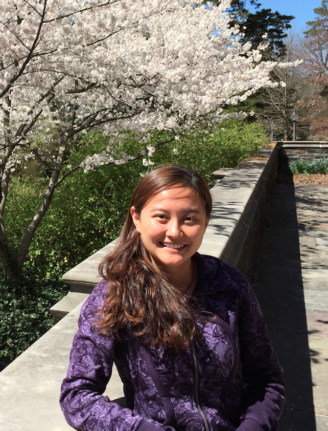

Qiuyun Wang
Ph.D. Candidate, Computer Engineering
 I am a fourth year PhD student in the department of Electrical and Computer Engineering at Duke University. I am working with Dr. Benjamin C. Lee in the Computer Architecture Group.
My research areas are resource allocation and scheduling policies for large-scale server systems. My current research topic is coordinating memory data locality with task scheduling policies to achieve energy-efficiency and high-throughput for datacenter workloads (e.g., Spark, GraphLab). I am also interested in heterogeneous architecture design, resource management policies for warehouse-scale computers with economics and game theory.
I received my Master of Science degree in Information Systems and Technology from Université Paris Sud (Paris XI, France) in 2012. I was fortunate to spend six months in École Polytechnique Fédérale de Lausanne (EPFL, Swtizerland) working on my master thesis: multiprocessor debugging and performance analysis for QorIQ P5020 development system. I obtained my Bachelor of Engineering degree from Huazhong University of Science and Technology (HUST, China) in 2010 with a major in Optoelectronic Information Engineering.
News
Contact Me
Office: Hudson 213, Duke University, Durham, NC, 27708